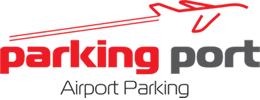

Paul has been in business for most of his adult life, starting out in business at the young age 10 years old.
Paul's first business was street performing; playing music and singing with his brother Markus on the streets of Darwin in the Northern Territory. This soon led to a professional career in the music industry playing locally in Darwin, surrounding rural areas as well as touring across Australia.
Known as 'The Territory Boys', Paul and Markus' most notable accomplishments include supporting well known Australian and international touring artists of the 1990's such as Wendy Mathhews Frente, The Back Sorrows, Lee Kernaghan, Rick Price, James Blundell, James Reyne and Silverchair.
Paul and Markus also recored and released their own self-titled CD, as well as released a CD single 'Road Train' along with a live action film clip which was broadcast daily across the Northern Territory on Channel 8.
Paul and Markus and went on to tour Australia with Daryl Sommers, star of the popular Saturday night entertainment show 'Hey Hey It's Saturday!' before Paul moved to Melbourne to pursue his studies.
Paul's brother Markus continued his music career as a solo artist and went on to recored many more albums which would hit the top 10 on the Australian Aria Charts.
See Markus Meier's performance at the 2011 Australian Golden Guitar Awards.
While undergoing his studies at Victoria University, Paul also completed his industry qualifications and certifications as a Personal Trainer. Paul started his health & fitness consulting business 'Paul Meier Fitness' in 2005 and still works as a Personal Trainer and Strength Coach in Melbourne.
For more information, please visit Paul's official health, fitness and personal coaching website www.paulmfitness.com.
While working in the health & fitness industry, Paul also took part in another business venture as a Company Director at 'Parking Port', providing off-airport valet car parking close to Melbourne Airport, Tullamarine. Paul exited the company after it was aquired and taken over by another company.
For more information, please visit the Parking Port website www.parkingport.com.au.
Paul is the Founder and CEO of Fiterr, a tech-startup company which specialises in providing software applications and technology for Fitness Professionals and Enthusiasts.
Although not yet trading commercially, Paul has personally developed and tested several Fiterr prototypes within his own health & fitness consulting business.
For more information, please visit Fiterr's official website www.fiterr.com.